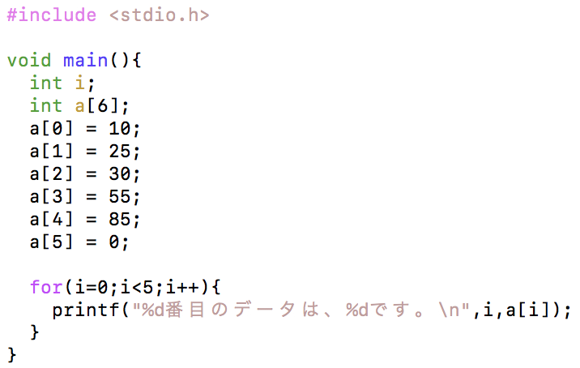
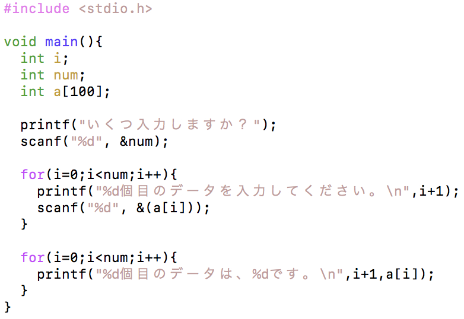

まず、以下のソースコードを打ち込み、コンパイルして実行してみましょう。
Arrangement.c

実行すると、以下のようになります。
実行結果
0番目のデータは、10です。
1番目のデータは、25です。
2番目のデータは、30です。
3番目のデータは、55です。
4番目のデータは、85です。
変数をたくさん使いたい場合、配列を使うと便利です。
配列の宣言と生成（１）
データ型 変数名[要素数];
// 例
int a[5];
a[0] = 1;
a[1] = 2;
a[2] = 3;
これは以下のように、1行で宣言することもできます。
配列の宣言と生成（２）
データ型 変数名[] = {値1, 値2, 値3};
// 例
int a[] = {1, 2, 3};
どちらで宣言しても同じです。
注意
配列の添え字は0から始まります。
例えば、配列a[]を５つ宣言した場合は、a[0]からa[4]までの５つが使えます。
では、以下のようなソースコードを入力し、実行してみましょう。
Arrangement2.c

実行すると、例えば以下のようになります。
実行結果
いくつ入力しますか？
3
1個目のデータを入力してください。
15
2個目のデータを入力してください。
23
3個目のデータを入力してください。
47
1個目のデータは、15です。
2個目のデータは、23です。
3個目のデータは、47です。
for 文と配列を組み合わせると、複数個の入力にも対応できるようになります。
また、配列の数を変数で与えることもできます。
配列のインデックスを２次元・３次元、あるいは多次元にして使うこともできます。
これについては、以下を参照してください。
参考資料 多次元配列
要素数が5個のint 型の一次元配列Arrayを4, 6, -3, 5, 2の順で初期化した後，2番目の要素を4番目の要素で除算するプログラムを作成しましょう．
要素が2つ以上ある配列を宣言し，配列のi番目の要素とj番目の要素を入れ替えるプログラムを作成しましょう．
ex. i=3, j=2, a[2]=6, a[3]=7とすると, a[2]=7, a[3]=6となる．
次のように，自分の点数と人数，他の人の点数を入力すると，順位を出力するプログラムを書きましょう．
例：あなた以外は何人ですか．
4
あなたの得点を入力してください．
56
他の人の得点を入力してください．
32
44
67
38
あなたは第2位です．
人数とそれぞれの点数を入力し，平均点を出力するプログラムを書きましょう．さらに，平均点以上の点数と人数を表示させましょう．
例：テストの受験者数を入力してください．
3
点数を入力してください．
67
89
34
平均は63.333333336点です．
平均点以上は，67点，89点の2人です．
0から９までの自然数が重複せずに格納されている要素数10の配列に対して，各要素を昇順に並べからえるプログラムを作成しましょう．
2×2行列A, Bを定義し，A+Bを行うプログラムを作成しましょう．
フィボナッチ数列を配列に格納し，出力するプログラムを書きなさい．
(応用問題) n×nの行列AとBの積の結果を記録する行列Cを作成し，オプションを指定せずにコンパイルして作成した目的コードの実行時間を可能な限り短くしましょう．